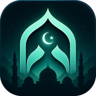
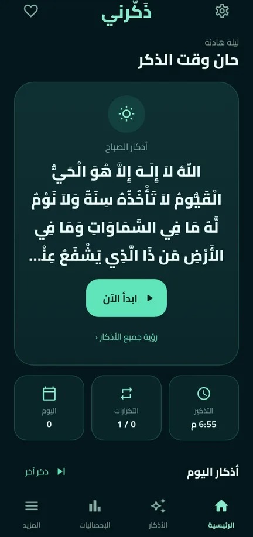
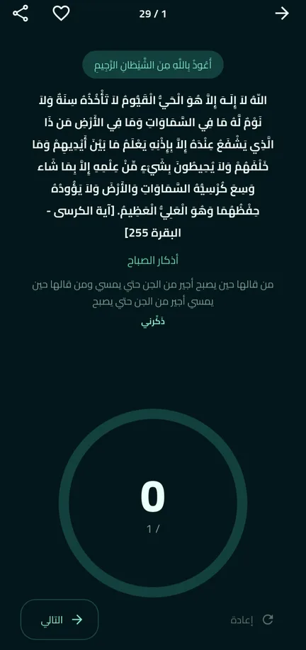
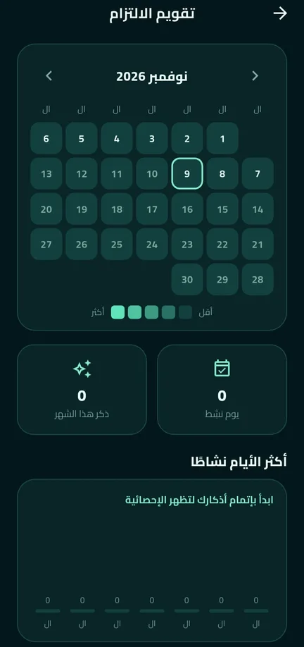
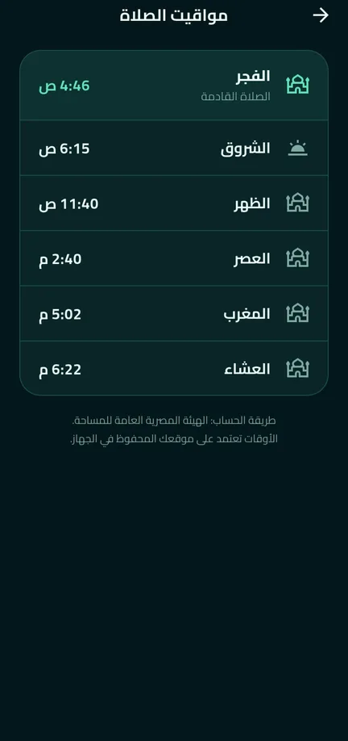
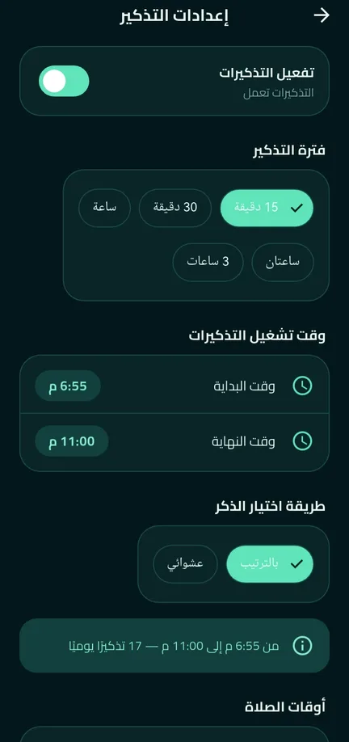
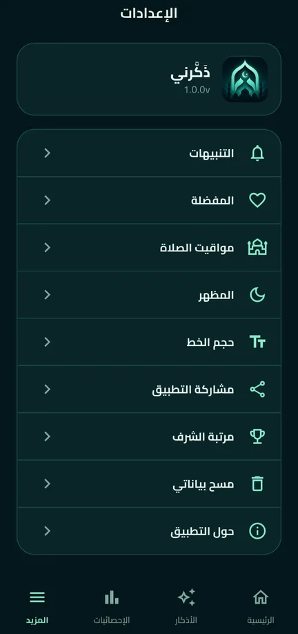

تذكير بإشعار فقط
يصلك إشعار «حان وقت الذكر» ويفتح الذكر عند الضغط عليه. بدون أزرار داخل الإشعار.
- فاصل بين التذكيرات: 15 دقيقة، 30 دقيقة، ساعة، ساعتان، 3 ساعات
- ترتيب الأذكار بالتسلسل أو عشوائي
- تحديد وقت البداية والنهاية
- صوت إشعار مخصص

ذَكَّرنيلأن الذكر حياة للقلب
تطبيق أندرويد يذكّرك بأذكارك في مواعيدها بإشعار واحد، تضغط عليه فيفتح الذكر مباشرة. تعدّ معك، وتتابع التزامك، وتعرض لك مواقيت الصلاة.
لقطات حقيقية من التطبيق.






يصلك إشعار «حان وقت الذكر» ويفتح الذكر عند الضغط عليه. بدون أزرار داخل الإشعار.
عدّاد ثابت لا يحتاج لسحب الصفحة، وحجم نص الذكر يتناسب مع طوله تلقائيًا.
اعرف أيام إتمامك للأذكار وقارن مستواك عبر الفترات.
الذكر الحالي أمامك دون فتح التطبيق.
طريقة الحساب: الهيئة المصرية العامة للمساحة، مع مراعاة التوقيت الصيفي والشتوي في مصر.
أضف أذكارك بنفسك واحفظ المفضلة منها.
داكن أو فاتح أو حسب النظام، وأربعة أحجام للخط.
الأذكار مضمّنة داخل التطبيق وتعمل بدون إنترنت، وبياناتك تُحفظ على جهازك.
مكتوبة داخل التطبيق، ويمكنك إضافة أذكارك إليها.
بعض من الأذكار تبدأ بالبسملة فتحتل مساحة من نص الذكر. في «ذَكَّرني» تظهر في شريط صغير فوق الذكر، ويبقى نص الذكر وحده في الأعلى.
صفحة داخل التطبيق تضم أسماء من ساهموا برأي أو مساعدة في تحسين «ذَكَّرني». شكرًا لكل من أضاف لهذا العمل شيئًا.